Tadao Ando buildings 42
Sort
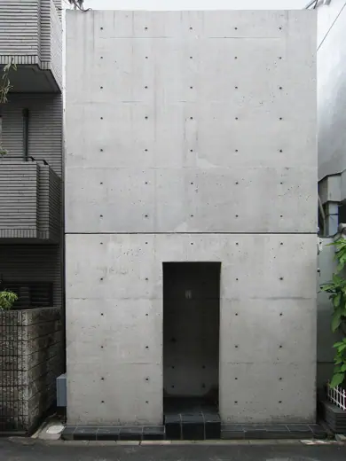
Row House in Sumiyoshi1976 · Osaka Church on the Water1988 · Tomamu
Church on the Water1988 · Tomamu Hyogo Children's Museum1989 · Himeji
Hyogo Children's Museum1989 · Himeji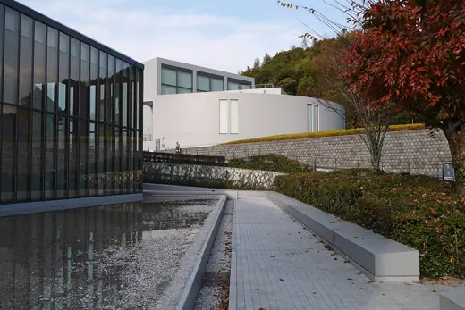
Himeji City Museum of Literature1991 · Himeji Benesse House Museum1992 · Naoshima
Benesse House Museum1992 · Naoshima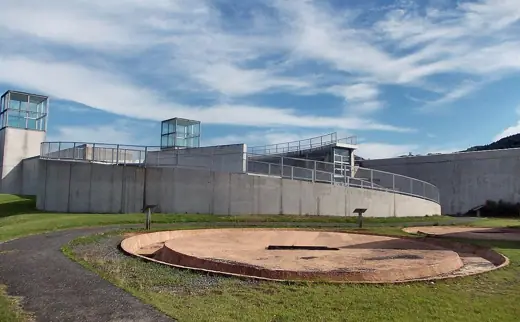
Kumamoto Prefectural Ancient Burial Mound Museum1992 · Yamaga Chikatsu Asuka Museum1994 · Kanan
Chikatsu Asuka Museum1994 · Kanan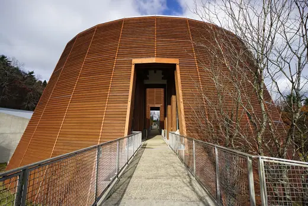
The Museum for Wood Culture1994 · Kami Asahi Group Oyamazaki Villa Museum of Art1996 · Oyamazaki
Asahi Group Oyamazaki Villa Museum of Art1996 · Oyamazaki Awaji Yumebutai2000 · Awaji
Awaji Yumebutai2000 · Awaji Osaka Prefectural Sayamaike Museum2001 · Osakasayama
Osaka Prefectural Sayamaike Museum2001 · Osakasayama Shiba Ryotaro Memorial Museum2001 · Higashiōsaka
Shiba Ryotaro Memorial Museum2001 · Higashiōsaka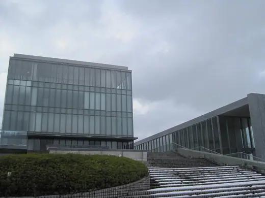
Ishikawa Nishida Kitarō Museum of Philosophy2002 · Kahoku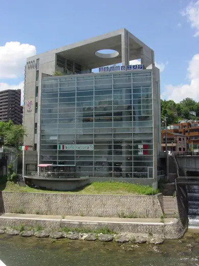
Nature Spa Takarazuka2002 · Takarazuka Onomichi City Museum of Art2003 · Onomichi
Onomichi City Museum of Art2003 · Onomichi Langen Foundation2004 · Neuss
Langen Foundation2004 · Neuss Omotesando Hills2006 · Tokyo
Omotesando Hills2006 · Tokyo Saka no Ue no Kumo Museum2007 · Matsuyama
Saka no Ue no Kumo Museum2007 · Matsuyama Lee Ufan Museum2010 · Naoshima
Lee Ufan Museum2010 · Naoshima Hill of the Buddha2015 · Sapporo
Hill of the Buddha2015 · Sapporo Bourse de Commerce - Pinault Collection2021 · Paris
Bourse de Commerce - Pinault Collection2021 · Paris Rokko Housing1983 · Kobe
Rokko Housing1983 · Kobe Church on the Wind1986 · Kobe
Church on the Wind1986 · Kobe Church of the Light1989 · Ibaraki
Church of the Light1989 · Ibaraki Water Temple (Honpuku-ji)1991 · Awaji
Water Temple (Honpuku-ji)1991 · Awaji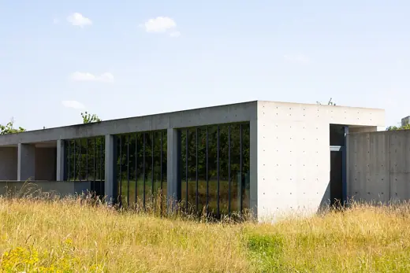
Vitra Conference Pavilion1993 · Weil am Rhein Garden of Fine Art Kyoto1994 · Kyoto
Garden of Fine Art Kyoto1994 · Kyoto Suntory Museum Tenpozan1994 · Osaka
Suntory Museum Tenpozan1994 · Osaka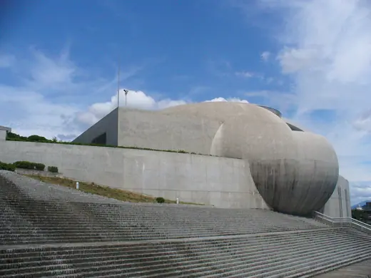
Nagaragawa Convention Center1995 · Gifu Koumi-machi Kōgen Museum of Art1997 · Koumi
Koumi-machi Kōgen Museum of Art1997 · Koumi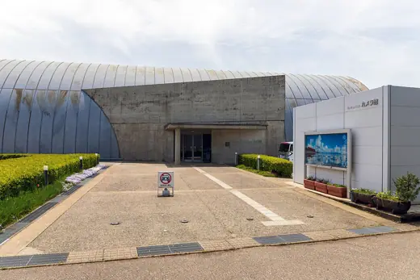
Fukuoka Camera Museum2000 · Takaoka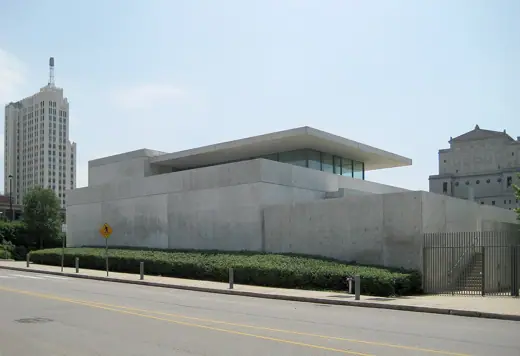
Pulitzer Arts Foundation2001 · St. Louis Hyōgo Prefectural Museum of Art2002 · Kobe
Hyōgo Prefectural Museum of Art2002 · Kobe Modern Art Museum of Fort Worth2002 · Fort Worth
Modern Art Museum of Fort Worth2002 · Fort Worth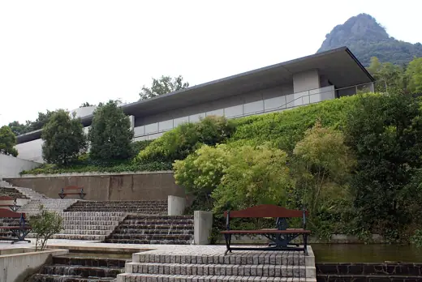
Shikoku Mura Gallery2002 · Takamatsu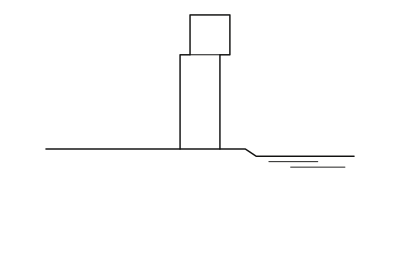
4x4 House2003 · Kobe Chichu Art Museum2004 · Naoshima
Chichu Art Museum2004 · Naoshima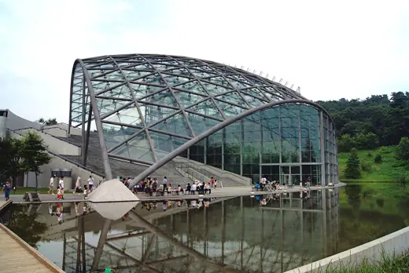
Gunma Insect World2005 · Kiryū 21_21 Design Sight2007 · Tokyo
21_21 Design Sight2007 · Tokyo Glass House, Seopjikoji2008 · Seogwipo
Glass House, Seopjikoji2008 · Seogwipo Akita Museum of Art2013 · Akita
Akita Museum of Art2013 · Akita He Art Museum2020 · Foshan
He Art Museum2020 · Foshan